剣士SWORDSMAN
剣で戦う近距離のジョブ。体力の回復が早く、前に出て戦うのが得意。
- 武器
- 剣士の剣(3連斬り・ジャンプ斬り)
- スキル
- スパイア(構えて突進する突き)
- ULT
- エクスカリバー
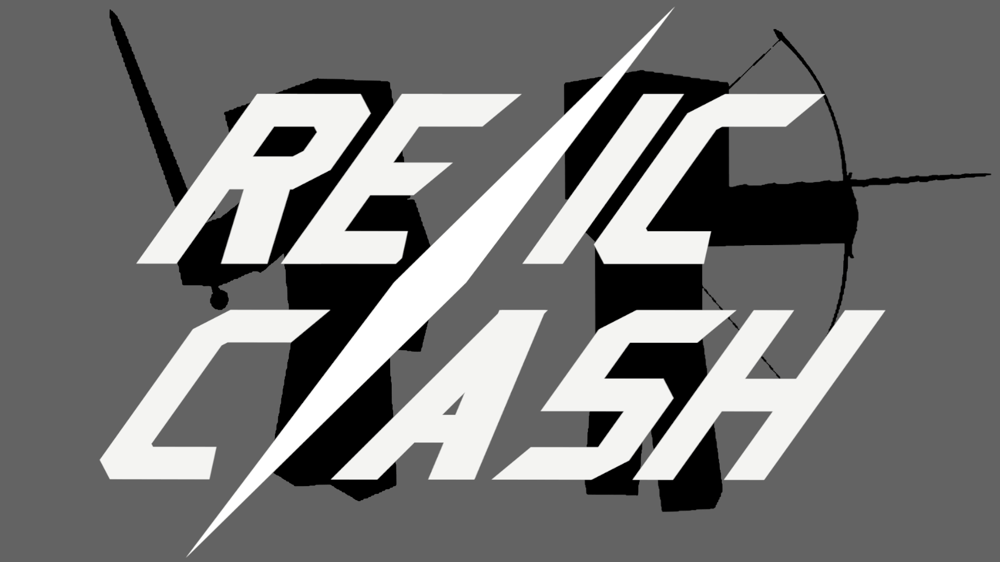
MINECRAFT BEDROCK PVP WORLD
9つのジョブと5つの戦場。倒して、エリアを取って、だれよりも先に点を集めろ。
Relic Clash は、全員が敵の個人戦で点を取り合うワールドです。剣・銃・弓・魔法など、戦い方がまったく違う9つのジョブから1つを選んで戦います。
相手を倒すほか、マップのエリアに1人だけでいると点が入ります。ジョブごとの必殺技「ULT」や、試合中にたまるお金で買える強化で、戦い方を育てていけます。
試合の前にはロビーの「お試し場」で、全部のジョブを好きなだけ試せます。
数字はすべてホストがゲーム設定で変えられます。
ジョブは復活するたびに選び直せます。くわしい操作は、ゲームの中のジョブ説明で見られます。
剣で戦う近距離のジョブ。体力の回復が早く、前に出て戦うのが得意。
M16で戦う銃のジョブ。走り続けると足が速くなる。
弓で戦う遠距離のジョブ。空中から狙うのが得意。
投げナイフで戦うジョブ。近くでは斬り、離れた敵にはナイフを投げる。足が速い。
くっつくボムで戦うジョブ。たくさんくっつけて、まとめて爆発させる。
空から攻撃を呼ぶジョブ。ふだんの攻撃は弱いが、呼び出す攻撃が強力。
赫子(かぐね)で戦う近距離のジョブ。ふだんは素手だが、受けるダメージが少ない。
MPを使って魔法で戦うジョブ。攻撃・吹き飛ばし・守りの魔法を使い分ける。
刀で戦う近距離のジョブ。攻撃を当て続けて桜気をため、特殊攻撃で戦う。
マップはホストが試合の前に選びます。スタート地点はどこから始めても有利・不利が出ないように作ってあります。
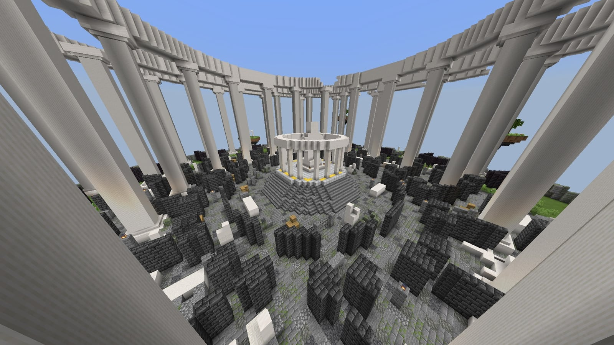
SCREENSHOT空に浮かぶ、古代の闘技場の跡。
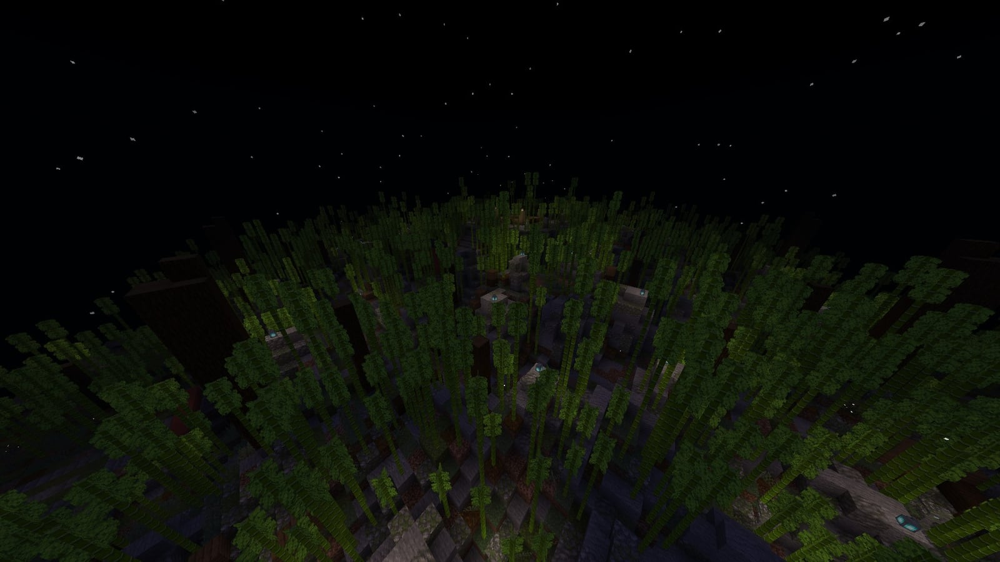
SCREENSHOT月明かりの夜、竹林に囲まれた神社。
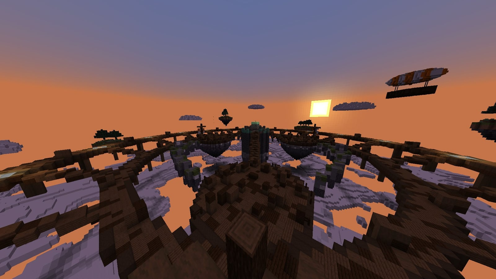
SCREENSHOT夕焼けの雲の上、空の船着き場。エリアは60秒ごとに次の甲板へ移る。
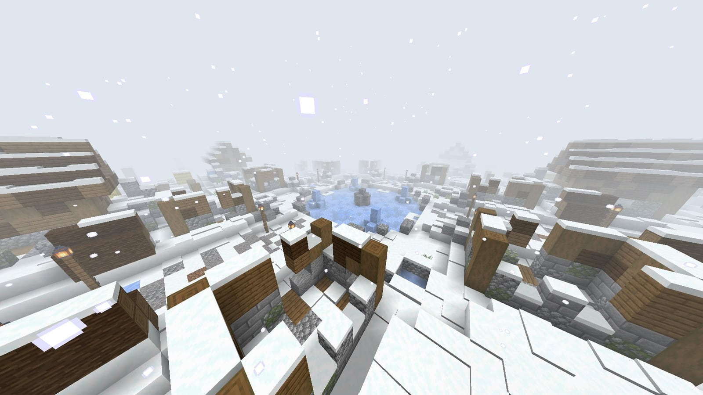
SCREENSHOT吹雪にのまれた、雪の廃村。遠くはほとんど見えない。
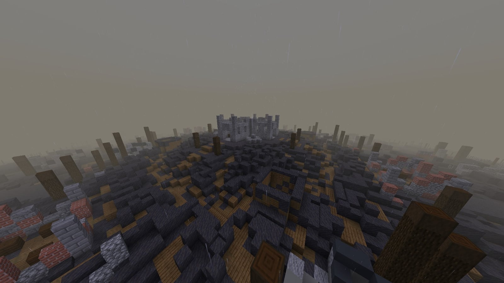
SCREENSHOT第一次世界大戦の戦場がモチーフ。泥の高地と、枝分かれする塹壕。
試合が始まるたびに、5つのマップから1つが選ばれる。
時間や、相手にダメージを与えることでゲージがたまります。たまり方はジョブによって違います。
全ジョブ共通の強化。ダメージ軽減、回復、移動速度、ULT短縮など。同じものを買うと段階が上がります。
ジョブの能力を上げる強化。ランダムに出る3つから選びます。
ジョブのスキルそのものを変える強化。こちらもランダムな3つから選びます。
相手を倒す、倒すのを手伝う、エリアにいることでもらえます。
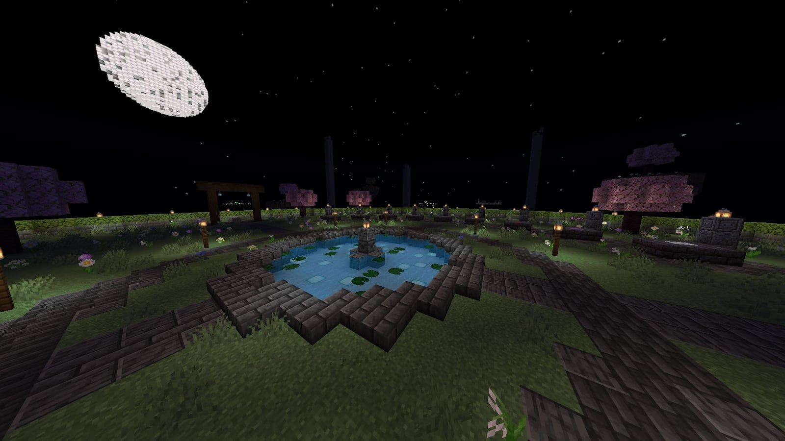
SCREENSHOT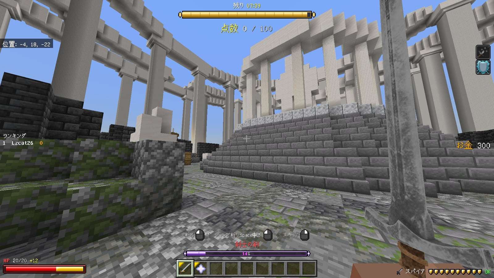
SCREENSHOT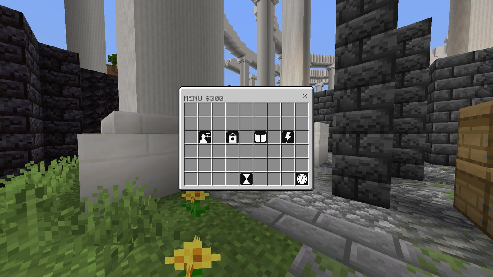
SCREENSHOT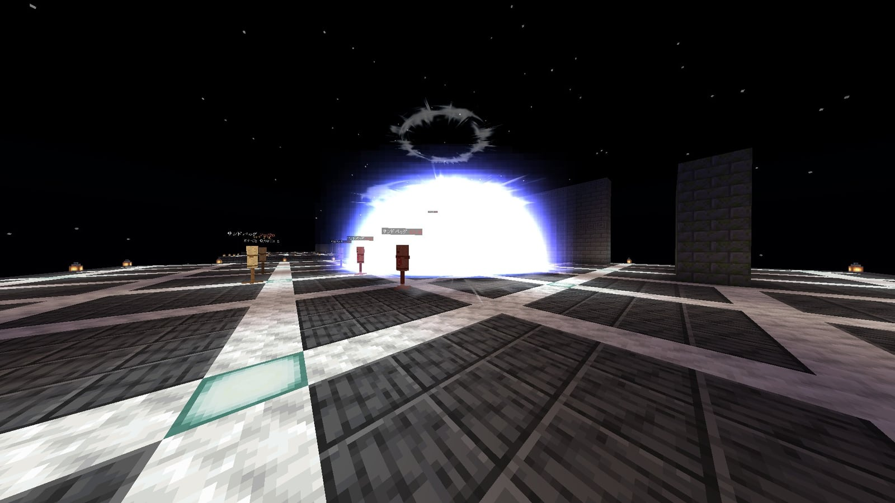
SCREENSHOT以下の作品を元に、Minecraft Bedrock向けに変換・加工(改変)して使っています。制作者の皆さんに感謝します。同じ内容を、パックの中の CREDITS.txt にも入れています。
v1.0.1 — .mcworld ファイルです。開くとMinecraftにワールドとして読み込まれます。
v1.0.1(約19MB)